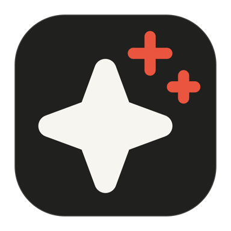

Safari homepage
Pulse
Checking extension…
Your day, ready when Safari opens.
See current work, your calendar, reminders, weather, and shortcuts in one calm place.
Safari extension
Checking whether Pulse is enabled…
Homepage address
Loading address…
Pulse stays local. No server or background process is required.